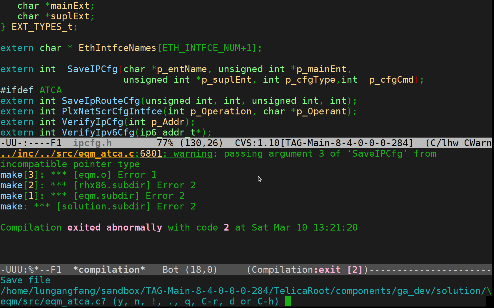

Compiling in Emacs
Table of Contents
1 The "Normal" Way to Compile C++ Code in Linux(?)
- Open two terminals, one for compilation, the other for editing.
- Run compile command in one terminal and redirect compilation output to a file.
- Open the file and manually screen the output.
- Once spotted a compilation error,
- Remember the file name and line number
- Switch to the other terminal
- Open corresponding file and jump to the designated line.
- Sometimes, spend a lot of time debugging since forget to save before compile
2 The Emacs Way
2.1 Run M-x compile when you want to compile
You should run the command with the current path the directory makefile. Usually, opening the makefile will do the job
2.2 Press <enter>
Since I configured the default compile command to exactly what I want, no need to type the command for compilation.
2.3 Errors highlighted in a new buffer
2.4 Jump to the error spot
C-x ` (Or just a mouse click).
2.5 Fix error and M-x recompile.
2.6 You will not forget to save your code before compilation
Emacs will prompt you if you hadn't do that before (re)compile.

3 Handling makefiles that change directories
3.1 Some makefiles are annoying since there are "cd" commands.
For example:
%.subdir: @if ([ ! -d $(patsubst %.subdir,%,$@) ]); then \ $(ECHO) "*** Error " $(patsubst %.subdir,%,$@);\ exit 1; \ fi; @cd $(patsubst %.subdir,%,$@); \ $(ECHO) "Checking `pwd` for work"; \ $(MAKE_COMMAND)
3.2 Consequently, C-x ` can not locate errors correctly
since the files are not where shown in the compilation buffer.
3.3 The solution
is straightforward: update the "default-directory" to where the compilation actually happened.
For example, in this example, I know that string "Checking xxx for work" indicates a directory change. So, all that I need to do is to search that backward from the bottom of compilation buffer.
(setq compile-command "make SWATCA=t" compilation-scroll-output t) (define-key compilation-mode-map "r" 'lgfang-relocate-make) (defun lgfang-relocate-make () "Plexus specific: relocate default-directory according to last 'Checking ... for work'. Dirty but works" (interactive) (save-excursion (goto-char (point-max)) (message "Relocate `make' to: %s" (setq default-directory (replace-regexp-in-string "Checking *" "" (replace-regexp-in-string " *for work *" "" (buffer-substring (re-search-backward "Checking .* for work") (progn (end-of-line)(point)))))))))
3.4 With above code, every time confronted with such issue, I just press "r" to "relocate"
4 Beyond Compilation
In fact, the compile command can be used to do other things. For instance Unit Test.